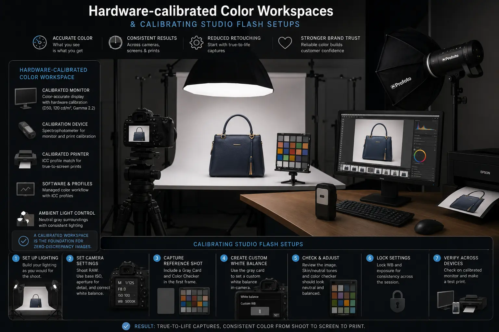
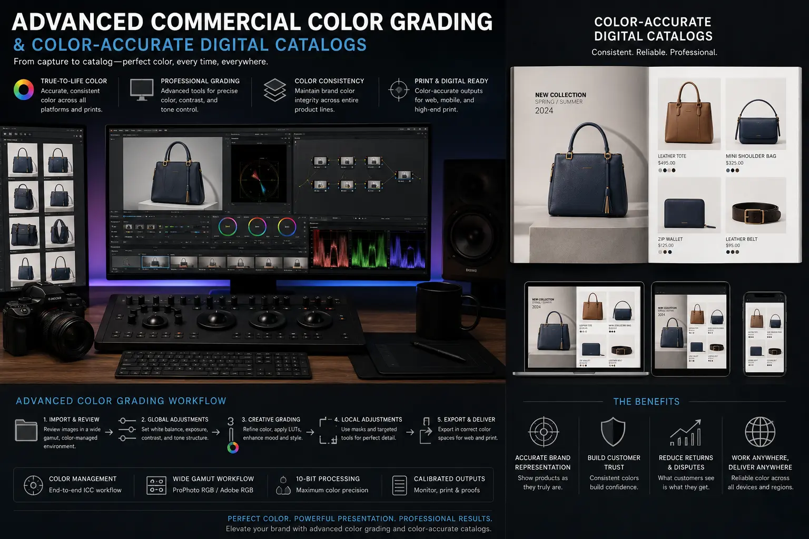

Setting Up a Hardware-Calibrated Color Workspace for Zero-Discrepancy Catalog Shoots
The Color Accuracy Crisis in E-commerce Photography
In E-commerce Product Photography, colour is not an aesthetic choice — it is a product specification. When a customer views a burgundy dress on a website and receives a product that appears closer to maroon or wine, the return is not a customer service issue — it is a photography failure. The image misrepresented the product, and the brand pays for it in return shipping, restocking, negative reviews, and lost customer lifetime value.
The root cause of colour discrepancy in catalog photography is rarely the camera — modern digital cameras capture colour with excellent fidelity. The problem lies in the chain of devices and decisions between capture and final output: the colour temperature of the studio flash, the white balance setting of the camera, the colour accuracy of the editing monitor, the colour profile applied during export, and the colour rendering of the end user's display. At any point in this chain, colour can shift — and the cumulative effect of multiple small shifts can produce product images that bear little resemblance to the physical item.
Hardware-Calibrated Color Workspaces solve this problem by establishing a scientifically measured, objectively accurate colour pipeline from capture through editing to export — ensuring that the colours the photographer sees on the editing monitor are the same colours that were captured by the camera, which are the same colours present on the physical product. This is not a creative enhancement — it is a technical necessity for any studio producing color-accurate digital catalogs at scale.
The Calibrated Pipeline: From Flash to Final Export
Building a zero-discrepancy colour pipeline requires calibrating every device in the production chain to a common, measured standard. Advanced Commercial Color Grading in product photography is not about creative colour manipulation — it is about ensuring technical colour fidelity throughout the workflow:
- Step 1 — Flash colour temperature measurement and calibration. Calibrating studio flash setups begins with measuring the actual colour temperature of each flash unit using a colour meter. Most studio strobes are marketed as 5500K (daylight balanced), but actual output varies between units by 100-300K, and output shifts across different power levels. Measure each unit at the power settings you will use, note the exact Kelvin reading, and set a custom white balance in the camera body to match the measured temperature — not the manufacturer's nominal specification.
- Step 2 — Colour reference chart inclusion. At the start of every shooting session, photograph a standardised colour reference chart (X-Rite ColorChecker Passport or Datacolor SpyderCheckr) under the production lighting. This reference frame provides an objective colour target that allows the editor to create a precise colour correction profile in Lightroom, Capture One, or Camera Raw — correcting any remaining colour cast introduced by the flash, the lens coating, or the camera sensor's native colour science.
- Step 3 — Monitor hardware calibration. The editing monitor is calibrated using a hardware colorimeter (X-Rite i1Display Pro, Datacolor SpyderX) that measures the actual colours displayed on the screen and creates an ICC profile that corrects any deviations from the target colour space (sRGB for web-first catalogs, Adobe RGB for print-inclusive workflows). This calibration must be repeated every 2-4 weeks as monitor output drifts with backlight aging and temperature changes.
- Step 4 — Controlled ambient lighting. The editing environment must have controlled, consistent ambient lighting — ideally D50 (5000K) bias lighting behind the monitor and neutral grey walls that do not introduce colour cast reflections onto the screen. Editing in a room with sunlight, coloured walls, or mixed artificial lighting sources compromises the editor's colour perception regardless of monitor calibration accuracy.
- Step 5 — Colour-managed export. All exported images must be embedded with the correct ICC colour profile — sRGB for web and e-commerce platforms, Adobe RGB for print production. Images exported without embedded profiles may be interpreted differently by different applications and displays, reintroducing the colour variability that the entire calibrated pipeline is designed to eliminate.
Fabric Colour Fidelity
Preserving clothing fabric original hues requires calibrated flash, precise white balance, and hardware-calibrated monitors — ensuring navys stay navy, burgundys stay burgundy, and pastels maintain their exact tonal character.
Reduced Return Rates
Producing color-accurate digital catalogs reduces colour-driven returns by 15-30% — directly impacting profitability for brands selling hundreds or thousands of textile and fashion SKUs online.
Conversion Optimisation
High-conversion product modeling depends on colour accuracy as much as lighting and composition — customers who trust that the colour they see is the colour they will receive are significantly more likely to complete the purchase.
Professional Output Standards
Maintaining white background commercial photography standards requires calibrated workflows — ensuring white backgrounds are true neutral white (R255 G255 B255) without warm or cool colour casts that shift the perceived colour of the product.

Preserving Fabric Colours: The Fashion Photography Challenge
Preserving clothing fabric original hues is the most technically demanding application of calibrated colour workflows because textile colours present unique challenges that rigid surfaces (electronics, furniture, packaging) do not:
- Metamerism. Many fabric dyes exhibit metamerism — they appear different colours under different lighting conditions. A garment that appears navy blue under daylight may appear nearly black under tungsten lighting or take on a green cast under fluorescent lighting. Using daylight-balanced studio flash (5500K) with measured colour temperature accuracy is essential for capturing the fabric's "true" colour as it would appear in natural daylight.
- Texture-dependent colour perception. The same dye on different fabric textures — matte cotton, satin silk, brushed wool, textured linen — reflects light differently, causing the perceived colour to shift. The photographer must adjust lighting angle and diffusion to reveal the fabric's true colour rather than the colour artefact created by surface reflections.
- Colour gamut limitations. Some fabric colours — particularly deep saturated reds, purples, and electric blues — fall outside the sRGB colour gamut that web browsers display. The editor must make informed decisions about how to render these out-of-gamut colours within sRGB while maintaining the closest possible perceptual match to the physical fabric.
- Cross-SKU consistency. In a catalog shoot with hundreds of garments, colour consistency across the entire catalog is as important as individual accuracy. Every image must be shot under identical lighting conditions, edited with the same colour profile, and exported with the same ICC settings to ensure that the same colour appears the same across all product pages.
Studio Configuration for Calibrated Catalog Production
Building a professional digital retail photography studio optimised for colour accuracy requires specific environmental and equipment configurations:
Lighting Equipment
- Use studio flash units with a CRI (Colour Rendering Index) of 95 or above — lower CRI lights distort colour rendering regardless of calibration.
- Measure each flash unit's actual colour temperature with a colour meter and document the values for custom white balance configuration.
- Use consistent modifiers (softboxes, strip lights, reflectors) across all shooting sessions — changing modifiers changes the colour temperature and quality of the light.
- Replace flash tubes at regular intervals — aging tubes shift colour temperature progressively, introducing gradual colour drift that is difficult to detect without measurement.
Editing Environment
- Install a professional-grade editing monitor with factory-calibrated sRGB coverage of 99% or above (BenQ SW series, EIZO ColorEdge, NEC MultiSync).
- Hardware-calibrate the monitor using a spectrophotometer at sRGB D65 white point, 120 cd/m² brightness, and gamma 2.2 — recalibrate every 2-4 weeks.
- Control ambient lighting in the editing room — D50 bias lighting behind the monitor, neutral grey wall paint, blackout curtains to eliminate variable daylight.
- Use a consistent desk surface in neutral grey — coloured desk surfaces reflect onto the monitor and shift the editor's colour perception.
Quality Assurance
- Compare physical product samples against on-screen images under controlled D50 viewing lighting before approving final exports.
- Maintain a physical swatch library of critical colours (brand-specific Pantone references) for direct comparison during editing.
- Run automated colour checks on exported images to verify white point neutrality and colour profile embedding before delivery to marketplace platforms.
- Document all calibration settings, dates, and measurements in a studio log for traceability and quality auditing.

Conclusion
Hardware-Calibrated Color Workspaces are not optional upgrades for professional E-commerce Product Photography studios — they are the technical foundation that ensures every product image accurately represents the physical item. From calibrating studio flash setups and measuring colour temperature to hardware-calibrating editing monitors and controlling ambient viewing conditions, each link in the colour pipeline must be objectively measured and scientifically calibrated.
For fashion and textile brands, Preserving clothing fabric original hues across hundreds of SKUs requires the full calibrated workflow — Advanced Commercial Color Grading applied with colour reference charts, ICC-profiled exports, and controlled editing environments. The result is color-accurate digital catalogs that reduce colour-driven returns, increase customer trust, and support high-conversion product modeling across every marketplace and platform.
At The PhD Ads, we operate Hardware-Calibrated Color Workspaces for digital retail photography — from flash measurement and white background commercial photography to hardware-calibrated editing and colour-managed export pipelines that deliver zero-discrepancy catalog imagery at scale.
Key Topics
Eliminate Colour Discrepancy from Your Catalog
At The PhD Ads, we operate hardware-calibrated color workspaces — measured flash temperatures, profiled monitors, and colour-managed exports that ensure every product image matches the physical item.
Email: team@e2o.in